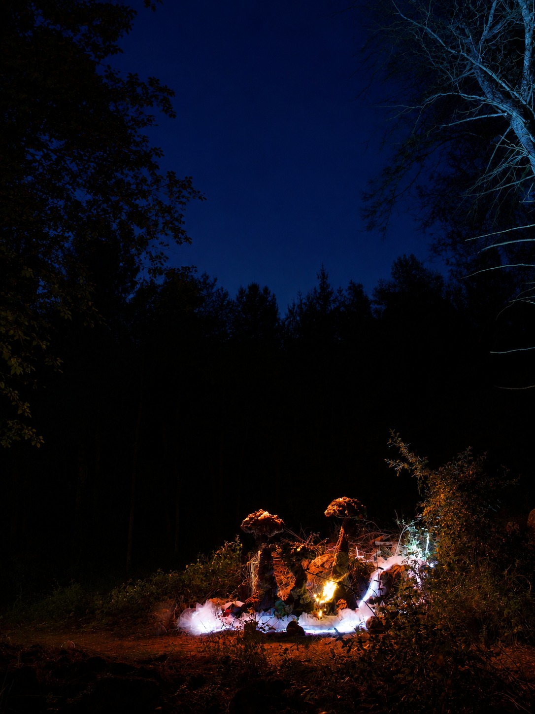
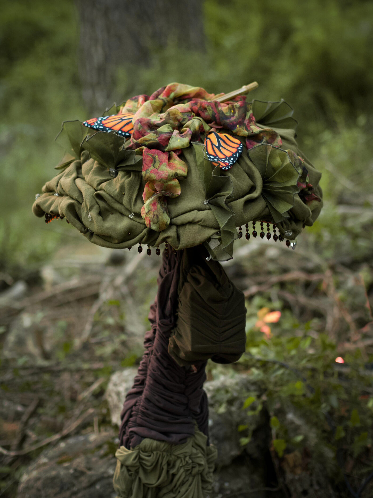
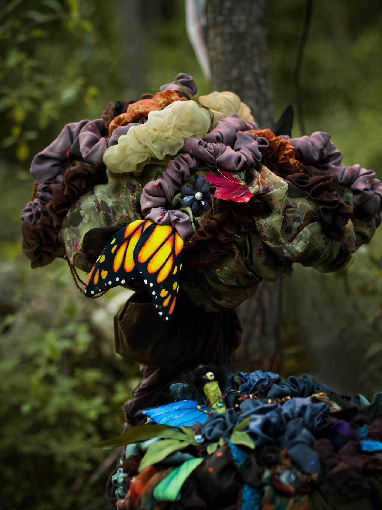
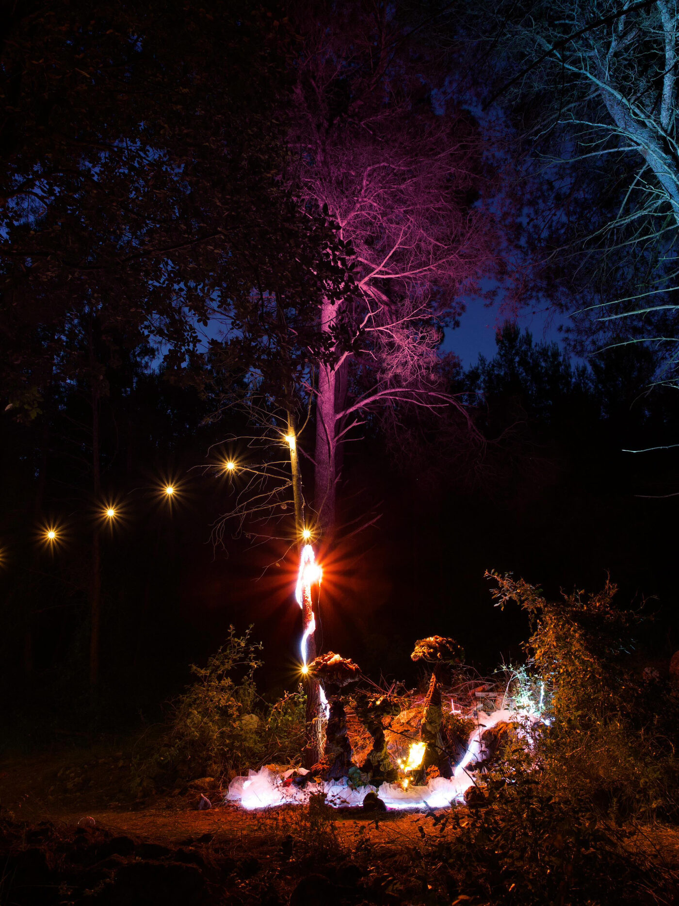

Mycelium Parlour
NEST Festival, Alt Penedès
A gathering of mushrooms sharing stories from the world above and below. Through playful conversations and fungal lore, they slowly uncover the invisible network that binds them into a single living being.
Individualized speakers within each mushroom cap give their own unique voice and personality to entice passersby with their own respective stories of their experiences above and underground, with ambient music providing atmosphere during each passing chapter.







Year
2026
Medium
Fabric, textiles, LED strips, integrated speakers, Raspberry Pi
Location
NEST Festival, Alt Penedès
Duration
40 minutes (loop)
Photography
Francesc Cami